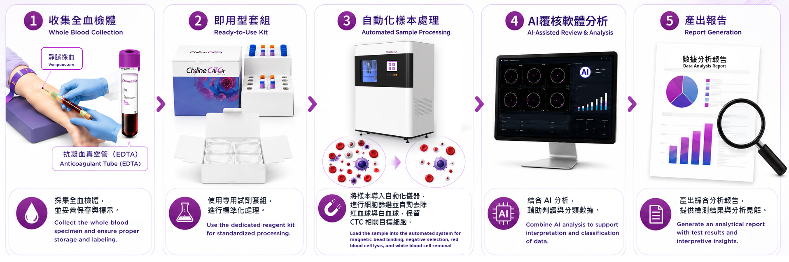
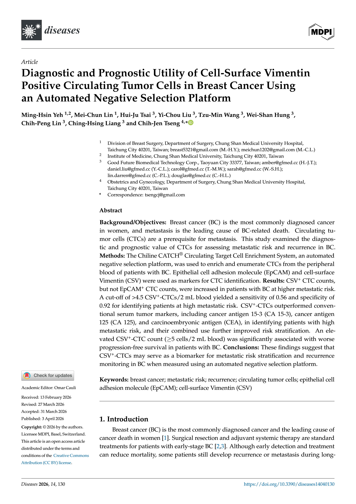
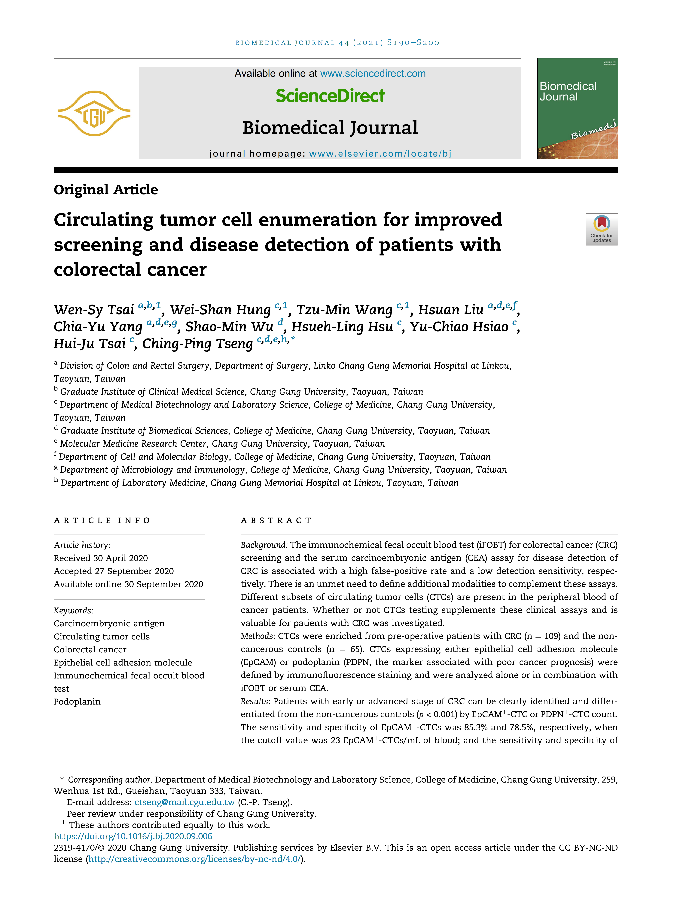

Product Type
Fully automated enrichment system and reagent / consumable kit
The Chiline CATCH® CTC Enrichment System integrates blood sample processing, CTC separation and staining, image analysis, and report output to help laboratories complete CTC testing through a fully automated and standardized workflow.

From whole blood collection and sample processing to immunofluorescence staining, image analysis, and report generation, the workflow helps establish a consistent and standardized CTC testing process.

The Chiline CATCH® CTC Enrichment System supports negative selection, immunofluorescence staining, and image-based analysis workflows. Related studies have applied the platform to CTC assessment in breast cancer, colorectal cancer, and hepatocellular carcinoma.

Diagnostic and Prognostic Utility of Cell-Surface Vimentin Positive Circulating Tumor Cells in Breast Cancer Using an Automated Negative Selection Platform

Circulating tumor cell enumeration for improved screening and disease detection of patients with colorectal cancer

Sequential Circulating Tumor Cell Counts in Patients with Locally Advanced or Metastatic Hepatocellular Carcinoma: Monitoring the Treatment Response
| Product name | Cat No. |
|---|---|
| Chiline CATCH Circulating Target Cell Enrichment System | IM2 |
| Chiline CATCH Circulating Target Cell Enrichment Kit (Epithelial) | CEK02 |
| Chiline CATCH Circulating Target Cell Enrichment Kit (Mesenchymal) | MES01 |
| Chiline CATCH Circulating Target Cell Enrichment Control Test Kit | CEC01 |
| Chiline CATCH Circulating Target Cell Consumable Kit | CCK01 |

Designed for use with the Chiline CATCH® automated system to establish a standardized, high-consistency CTC testing workflow.